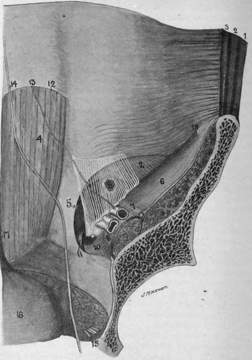

The Inguinal Region. Part 2
Description
This section is from the book "Surgical Anatomy", by John A. C. MacEwen. Also available from Amazon: Surgical Anatomy.
The Inguinal Region. Part 2
As the anatomical relationships of femoral hernia are closely allied to those of inguinal, it will be well to study these now, although, anatomically, they belong to the thigh. Looking once more at the internal surface of the abdominal wall, it has been seen that the transversalis fascia forms the innermost covering-if we except the peritoneum from which it is separated by extraperitoneal tissue-and that it is attached externally to the inner lip of the iliac crest and outer half of Poupart's ligament, while internally it is attached to the ilio-pectineal line along with Gimbernat's ligament. Between these attachments, however, the fascia turns under Poupart's ligament, to be continued into the thigh as the anterior portion of the sheath of the femoral vessels. The posterior portion of the femoral sheath is formed by the fascia iliaca, which, descending in front of the iliacus muscle, fuses both externally and internally with the fascia transversalis at the insertions mentioned, but separates from it between these points to permit of the passage of the vessels which it accompanies into the thigh. Were the sheath thus formed just of sufficient size to accommodate the vessels, the possibility of femoral hernia occurring would be slight. As a matter of fact, however, the sheath is divided into three compartments, the outer of which contains the artery, the middle the vein, while the inner forms the femoral or crural canal, and it is through this latter inner compartment that the femoral hernia makes its way to the thigh. As it does so, it pushes before it parietal peritoneum, and then a covering of septum crurale-a layer of extraperitoneal tissue, which covers the ring, or mouth, of the canal. Its relations here are-Poupart's ligament above and in front ; the bone, covered by pectineus muscle and fascia lata below and behind ; Gimbernat's ligament to the inside, and the femoral vein to the outside. The deep epigastric artery lies just above and outside the ring, and gives off a small pubic branch, which frequently runs down along the inner border of the crural ring. In about. 3 per cent, of cases the obturator artery from the external iliac is absent, and then this pubic branch of the deep epigastric enlarges to take its place, passing round the inner (and sometimes the outer) border of the ring to gain the obturator foramen. Were it necessary in such a case to notch Gimbernat's ligament for the relief of a strangulated femoral hernia, this abnormal vessel might be cut, and several cases of fatal hemorrhage from such an accident have been recorded. This pubic artery, or aberrant obturator as it is called when enlarged in the manner described, is accompanied by the pubic vein which communicates between the obturator and external iliac veins. The femoral, or crural canal, is funnel-shaped, and only extends about ½ inch down the thigh, terminating under the saphenous opening of the fascia lata of the thigh, which must next be described. The fascia lata splits at its upper end into two portions, an outer, or iliac, and an inner, or pubic, which overlap one another to form the oval saphenous opening. The outer, or iliac, portion is the more superficial, lying in front of the femoral sheath, and is inserted above into the iliac crest and Poupart's ligament. The inner fibres of this iliac portion are strongly developed, and arch upwards and inwards, to be inserted into the inner half of Poupart, forming what is known as the falciform ligament, while their free concave margin constitutes the superior cornu of the saphenous opening. If the margin of this superior cornu be followed downwards, it is seen to sweep round the lower margin of the saphenous opening, thus forming its inferior cornu, and then to run up the thigh again as the outer margin of the pubic portion, this time extending upwards and outwards beneath the sheath of the vessels, and in front of the pectineus and adductor longus, to be inserted into the ilio-pectineal line along the insertion of Gimbernat's ligament, and into the capsule of the hip-joint. The saphenous opening thus formed is covered by a special thin perforated lamina, which is known as the cribriform fascia, and which is perforated by the internal saphenous vein, which dips in here to join the femoral vein. A femoral hernia, then, on reaching the lower extremity of the short femoral canal, turns forwards, carrying a covering of cribriform fascia before it as it does so, and presents under the skin and superficial fascia. A curious point is that, as femoral herniae come forward, they also tend to turn upwards over Poupart's ligament, thus making mistakes in diagnosis between femoral and inguinal herniae possible. Of course, the neck of a femoral hernia is below Poupart, and external to the spine of the pubes. Various reasons have been adduced to explain this upward tendency. The unyielding character of the saphenous cornua and the traction upon the mesentery are probable causes. The femoral canal is rendered most lax when the thigh is flexed, adducted, and rotated inwards, a point to remember in applying taxis, when it should also be recollected that the sharp unyielding edge of Gimbernat's ligament is frequently the constricting cause, and may wound the bowel if undue force is exercised. Both bladder and ovary form occasionally the contents of femoral herniae.
Fig. 22.-Diagram of Abdominal Wall from Behind.
1. | External oblique. | 9 | Iliac fascia covering psoas muscle ; external iliac vein above it. |
Internal oblique. | |||
:;■ | Transversalis. | 10. | Pectineus muscle, with crural canal above it (formed by transversalis and iliac fascia). |
4. | Rectus. | ||
5. | Conjoined tendon, with indicator to tip of external ring. | ||
il | Gimbemat's ligament. | ||
6. | Iliac fascia covering iliacus muscle. | 12 | Semilunar fold of Douglas. |
7. | Iliac fascia covering anterior crural nerve, external iliac artery to its inner side. | 13. | Deep epigastric artery. Obliterated hypogastric artery. |
14. | |||
15. | Obturator vessels. | ||
B. | The internal ring, an opening in the fascia transversalis, a small portion of which is sh^wn in white. | 16. | Hladder. |
17. | Urachus. |
Continue to: